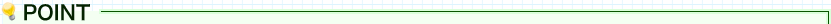

制作スケジュールを立てよう。
Portfolio making
実際の案件や作品制作と同様でポートフォリオ制作にも納期を決める事が大事。
きちんとスケジュールを組まないと、完成が大幅に延び、就職活動スケジュールに大きな影響を与える可能性があります。

- 在職中にポートフォリオは準備しておくこと。
- 常に更新をする意識をもつこと。
※退職後に準備をするとタイムロスをする事もありますが、
実績になるような数値(売上何パーセントアップ)などを忘れてしまうケースがあります。

| 「“じぶん分析”をしよう。」へ戻る | ポートフォリオメイキングトップへ | 「企画、構成を考えよう。」へ進む |
- “じぶん分析”
- ｜
- 制作スケジュール
- ｜
- 企画、構成
- ｜
- 素材の整理
- ｜
- プロトデザイン
- ｜
- デザイン / ユーザビリティ
- ｜
- 評価されるポートフォリオ
- ｜
- まとめ